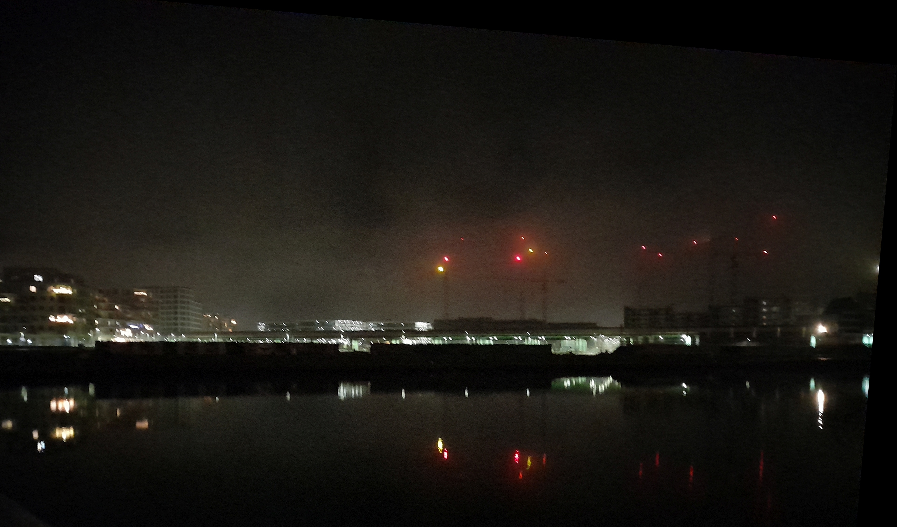
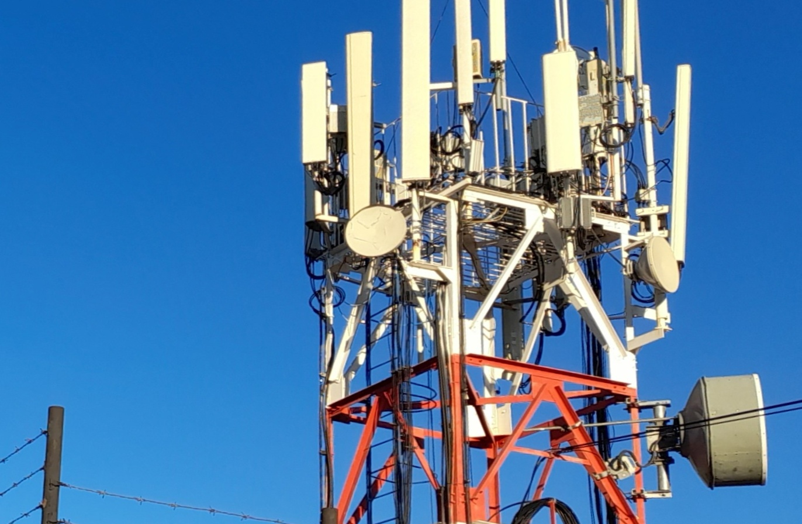
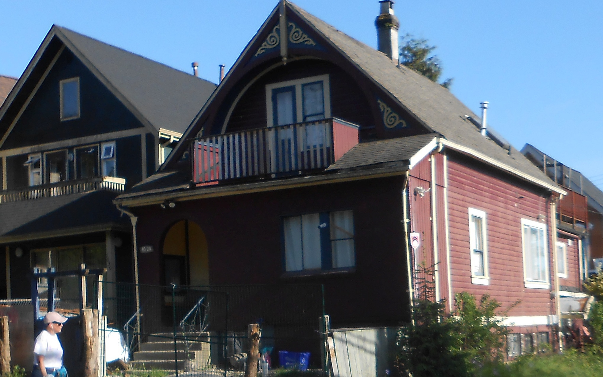
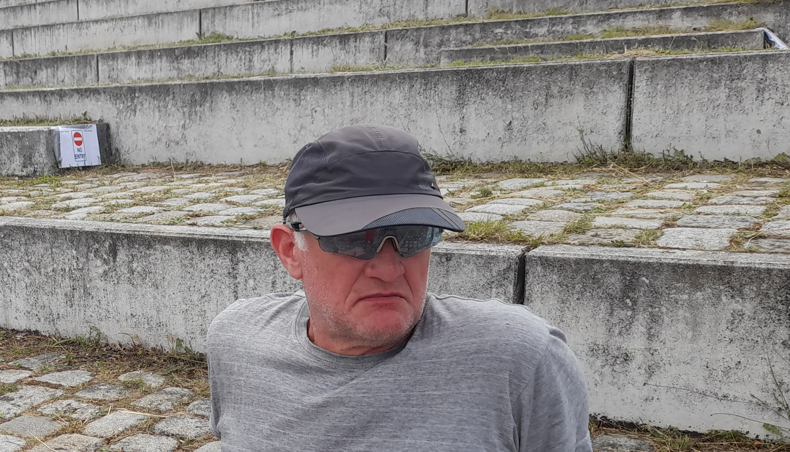

Motto"Risico’s minimaliseren is veiligheid maximaliseren." Veiligheid betekent: integriteit, beschikbaarheid, vertrouwelijkheid en betrouwbaarheid – op een geplande en gecontroleerde manier. Ik help u risico’s te herkennen, beoordelen en gericht te beperken.
|
 |
Hardware
Software & gegevensbeveiliging
|
 |
Trainingen op locatie (in-house)
|
 |
ContactEerste contact uitsluitend per e-mail: Telefoonnummer wordt alleen gedeeld met klanten |
 |
Waarom? Omdat vertrouwelijke klantdata (zoals installatiegegevens of technische specificaties) niet in verkeerde handen mogen vallen.
100% veiligheid bestaat niet – risico’s minimaliseren wél.